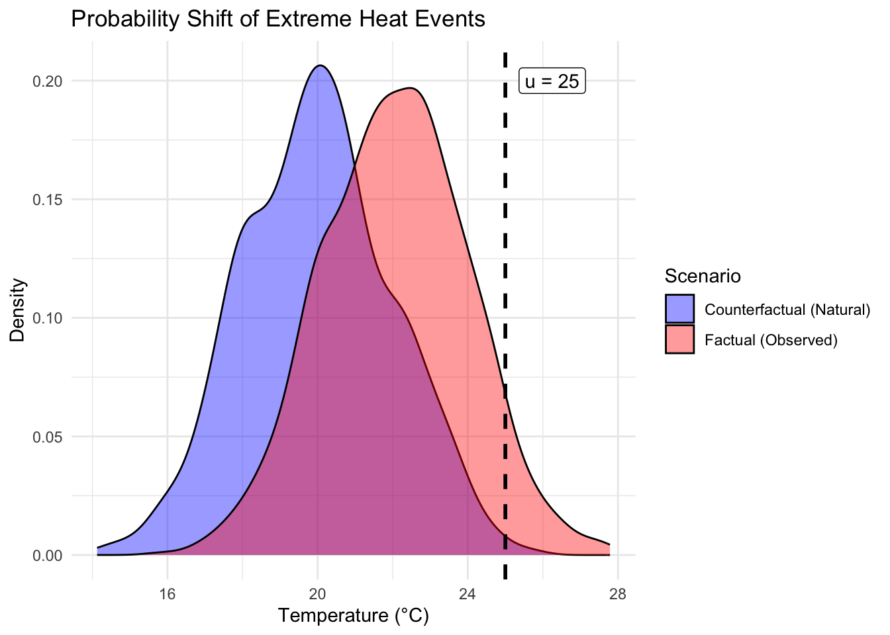

After calculating your metrics and applying causal logic, you should visualize the data to demonstrate the shift in probabilities between factual and counterfactual worlds, along with translating your statistical findings for stakeholders. In the application below, we will represent counterfactual and factual worlds with probability density functions (PDF) and visualize the PDFs with a Univariate Density Plot.
PDFs Visualize Probabilities: A PDF is a statistical function that describes the likelihood of a continuous variable (like temperature) taking on a specific value. Because the area under the curve represents probability, you can visually see the difference between \(p_1\) and \(p_0\) by comparing the size of the “tails” beyond your threshold.
Isolates the Impact: Using a simpler univariate (single-variable) approach allows you to isolate one specific hazard—such as maximum daily rainfall or peak wind speed—without the complexity of multiple dimensions. This focus makes it easier to identify exactly how a causal factor affects that specific metric.
5.1 Visualizing Data
5.1.1 Create a Univariate Density Plot
Use a density plot to provide a visual that shows how the causal factor shifts the distribution of the event.
Plot the Distributions: Generate two overlapping density curves—one for the factual world and one for the counterfactual world.
Mark the Threshold (\(u\)): Add a vertical line at your chosen threshold to clearly define the “extreme” zone.
Highlight the Probability Shift: Use shading or arrows to show the increase in area under the curve beyond the threshold in the factual world.
TipExample: Univariate Plot
library(ggplot2)# 1. Generate example dataset.seed(349)counterfactual_data <-rnorm(1000, mean =20, sd =2)factual_data <-rnorm(1000, mean =22, sd =2) threshold <-25# 2. Calculate probabilities (p0 and p1)# We find the mean of a logical vector to get the proportion > thresholdp0 <-mean(counterfactual_data > threshold)p1 <-mean(factual_data > threshold)# 3. Combine into a dataframe for plottingdata <-data.frame(temp =c(counterfactual_data, factual_data),world =rep(c("Counterfactual (Natural)", "Factual (Observed)"), each =1000))# 4. Create the plotggplot(data, aes(x = temp, fill = world)) +geom_density(alpha =0.4) +geom_vline(xintercept = threshold, linetype ="dashed", linewidth =1) +scale_fill_manual(values =c("blue", "red")) +annotate("label", x =26.25, y =0.2, label =paste0("u = ", threshold), fill ="white") +labs(title ="Probability Shift of Extreme Heat Events",x ="Temperature (°C)",y ="Density",fill ="Scenario" ) +theme_minimal()

Figure 5.1: Comparison of Factual and Counterfactual Temperature Distributions
Reminder: The above plot was created using fake, generated data. However, for the sake of the example, we are still pretending that the difference in the counterfactual and factual data was caused by some human influence.
Table 5.1: Summary of Attribution Metrics
Metric
Variable
Value
Factual Probability
\(p_1\)
0.055
Counterfactual Probability
\(p_0\)
0.003
Risk Ratio
RR
18.33
Fraction of Attributable Risk
FAR
0.95
5.1.2 Interpret the Plot
The above density plot visualizes the core theory of event attribution. Use the following points to interpret the visual relationship between the factual and counterfactual worlds:
Identify the Shift: Notice that the Factual (Red) distribution has shifted to the right compared to the Counterfactual (Blue) distribution. This horizontal shift represents the influence of the causal factor (e.g., human activities) on the average climate conditions.
Locate the “Extreme” Zone: The area to the right of the dashed vertical line (\(u\)) represents the “tail” of the distribution. Any data point in this zone is considered an extreme event. We can see that there are nonzero probabilities for extreme temperatures above the threshold in both the factual and counterfactual worlds.
Compare\(p_0\) and \(p_1\):
The small counterfactual (blue shaded) area beyond the threshold represents \(p_0\) (the probability of the event occurring naturally without the causal factor).
The much larger factual (red shaded) area beyond the threshold represents \(p_1\) (the probability of the event occurring in our current observed world).
Visualize the Risk Ratio: In the plot, the Risk Ratio is represented as the ratio between the blue and red shaded areas to the right the of threshold line. Visually, you can see that the red area is several times larger than the blue area, which confirms the Risk Ratio of 18.33. Thus, in our example, the influence of the causal factor (i.e., human activities) has made the occurrence of extreme heat events above 25\(\degree\)C 18.33 times more likely.
Visualize the FAR: While the Risk Ratio compares the sizes of the two areas, the FAR tells you what percentage of the “Current Risk” (the red area) is “new”, or comes as a result of the causal factor. In the example, the FAR is 0.95. You can explain that 95% of the red shaded area past the threshold is “excess risk” created by the shift in distribution. Only the remaining 5% (the part overlapping with the original blue area past the threshold) represents the natural, baseline risk.
NoteCounterfactual & Factual Overlap
The area where the blue and red curves overlap represents events that could have happened in either world. However, the area under the red curve that does not overlap with the blue represents the risk specifically added by human influence.
5.2 Communicate Metrics & Plots
When communicating with decision-makers, translate abstract metrics into a narrative that informs real-world policy or adaptation.
Use the Risk Ratio for Likelihood: Instead of saying “RR = 10,” tell stakeholders the event is “10 times more likely” due to the causal factor.
Use FAR for Responsibility: Instead of saying “FAR = 0.90”, use the Fraction of Attributable Risk to explain what proportion of the risk is directly linked to human behavior.
Clarify Causality: Explicitly state whether the factor was a “necessary” trigger, but be careful to note if it was not “sufficient” to cause the event on its own. You may need to use an additional example (such as the fuel and fire example in the Key Terms section) to explain the difference between necessary and sufficient causation.
When presenting the plot, do not assume the audience understands probability density. Use the following translation strategies:
Define the “Hill”: Explain that the “hill” represents where the variable (e.g., temperature) spends most of its time. The higher the peak, the more common that value is.
The “Shift” Narrative: Describe the movement of the factual curve as the “new normal.” Instead of saying “the mean shifted,” say “the entire climate has moved into warmer territory, pushing the whole curve with it.”
Focus on the “Tail”: Direct their eyes to the far right of the plot. Explain that while the middle of the “hill” moved a little, the “tail” (the extreme zone) grew significantly. This helps them understand why a small change in average temperature leads to a massive change in disaster frequency.
5.3 Answer the Question
In the introduction of this user guide, we set out to be able to answer the question: “How much did a specific factor increase the risk of an event?” Now that we know how to calculate, visualize, and communicate statistical metrics, we can provide a concrete answer.
TipExample
Using our example of extreme heat events from above:
Question: “How much did human-induced influence (the causal factor) increase the risk of an extreme heat event exceeding 25°C?“
Results: We observed that the factual world (with human-induced warming) produced a \(p_1\) of 0.055, while the natural, counterfactual world produced a \(p_0\) of only 0.003. From \(p_1\) and \(p_2\), we calculated a Risk Ratio of 18.3 and a Fraction of Attributable Risk of 0.95.
Conclusion: The human-induced causal factor made extreme heat events \(>\) 25\(\degree\)C 18.3 times more likely to occur. Additionally, our results indicate that 95% of the risk of exceeding the 25\(\degree\)C threshold is directly attributable to the human-induced causal factor.
Note: our application of causal logic could also be added to the Conclusion for a deeper interpretation of the results.